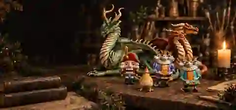

О мастерской
Там, где форма
становится характером
Вера лепит и расписывает фантазийных Жителей вручную — от первого каркаса до финального взгляда. Каждый — в одном экземпляре, каждый — со своей историей.
Путь Жителя
Не каталог, а Хроники
Каждый Житель мастерской — не просто фигурка на полке. Это целая история: от идеи, которая приходит к Вере во сне или за работой, до финального штриха, после которого она откладывает кисть и смотрит на своё создание дольше, чем нужно.
Мастерская существует как Хроники — запись рождений, характеров и судеб Жителей. Некоторые уже нашли своих Хранителей и уехали домой. Некоторые ещё в глине. Все — навсегда в истории мастерской.

Мастерская в цифрах
Немного статистики
Принципы мастерской
Три правила, которые не ломаются
Ручная лепка
Каждый Житель лепится вручную от каркаса до последней детали. Нет двух одинаковых — только два, которые рядом стоят и смотрят в одну сторону.
Авторская роспись
Каждый мазок — вручную. Никакого трафарета, печати или клона. Цвета подбираются под конкретного Жителя, под его мир и характер.
Один экземпляр
Если Житель уехал к Хранителю — он не вернётся. Повторить нельзя. То, что нашло дом, остаётся в Хрониках навсегда.
Материалы
Из чего рождаются Жители
Частые вопросы
Можно ли заказать фигурку, которой ещё нет в списке?+
Да. Напишите Вере, расскажите, кого вы хотите. Если идея совпадает с текущей работой — возможно, Житель уже рождается. Если нет — обсудим, будет ли он рождаться в мастерской.
Какой срок изготовления?+
Каждый Житель — индивидуальный, поэтому срок разный: от нескольких недель до пары месяцев. Вере важна каждая деталь, и она не торопит работу, которая тороплива.
Есть ли доставка?+
Да, доставка по России. Каждый Житель упаковывается вручную: крепкая коробка, надёжная обёртка, лента. Стоимость и сроки уточняются в переписке.
Можно ли повторить того Жителя, который уже уехал?+
Нет. Если Житель нашёл Хранителя — он не возвращается и не повторяется. Повторить нельзя. То, что нашло дом, остаётся в Хрониках навсегда.
Из чего сделаны фигурки?+
Просфорная глина, каркас из фольги, акриловые краски. Все материалы нетоксичные, фигурки не пахнут, не крошатся и не выцветают при нормальном уходе.
Заглянуть в Хроники
Каждый Житель — со своей историей и своим характером.
Смотреть всех Жителей